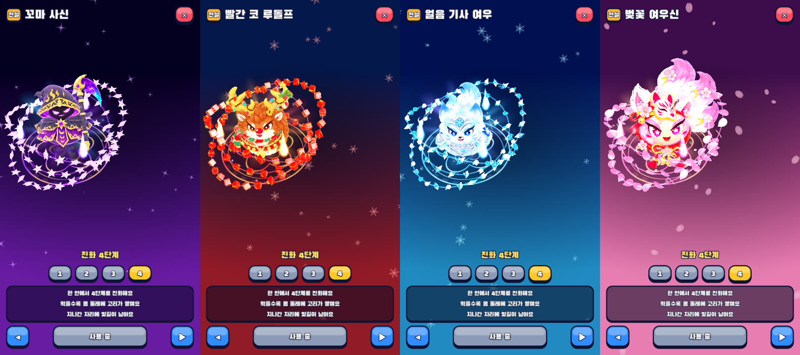

전설 스킨 진열 화면
2026년 11월 25일, 1.0.21. 스킨 탭 맨 위의 금빛 띠나 전설 스킨 칸을 누르면 열립니다. 캐릭터가 굴렀다 멈췄다 하며 진화 4단계, 궤도 고리, 지나간 빛길을 보여 줍니다.
꼬마 사신
벚꽃 여우신
스킨 탭의 전설 스킨 띠
4종 (진화 4단계)

2026년 11월 25일, 1.0.21. 스킨 탭 맨 위의 금빛 띠나 전설 스킨 칸을 누르면 열립니다. 캐릭터가 굴렀다 멈췄다 하며 진화 4단계, 궤도 고리, 지나간 빛길을 보여 줍니다.
